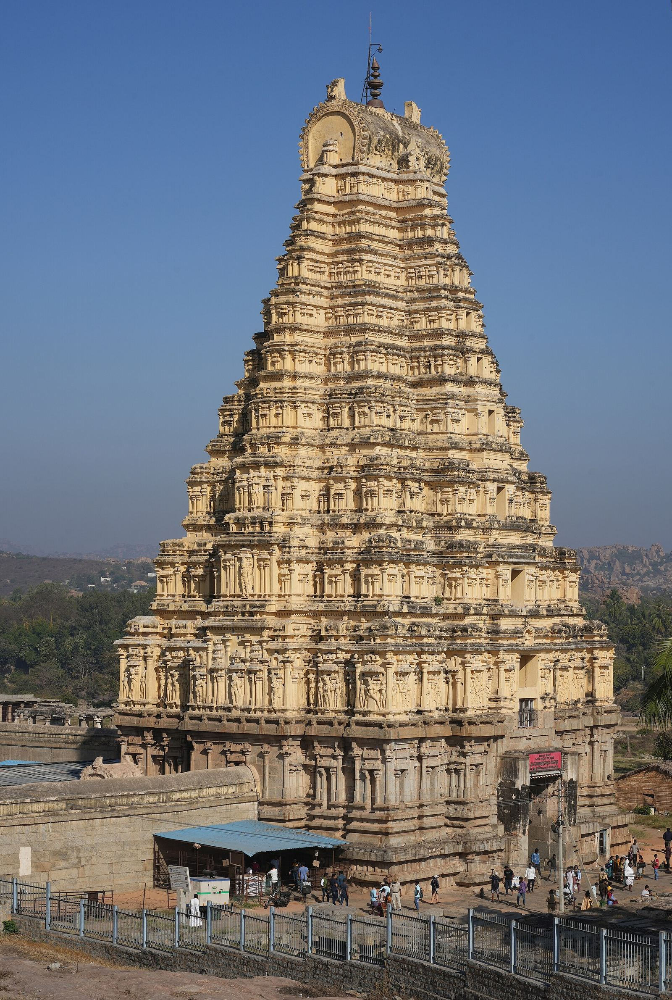

Flagship sanctum7th century CE
Hampi, Vijayanagara District, KarnatakaUNESCO World Heritage area · Continuously worshipped
Sri Virupaksha Temple, Hampi
The unbroken spiritual heartbeat of the Vijayanagara Empire along the sacred banks of the Tungabhadra. Worship has continued here for well over a thousand years, and the temple's own annual festival celebrates the wedding of Virupaksha and Pampa. Couples marry in the pillared courtyards where kings once knelt.
Brahma muhurta darshanaPrivate morning mangalarathi and kalyana permits
Traditional nadaswaramHereditary temple vidwans honouring local talas
Heritage estate staysHosapete and Kamalapura resort blocks curated
Banana leaf mahaprasadaTraditional North Karnataka wedding feast